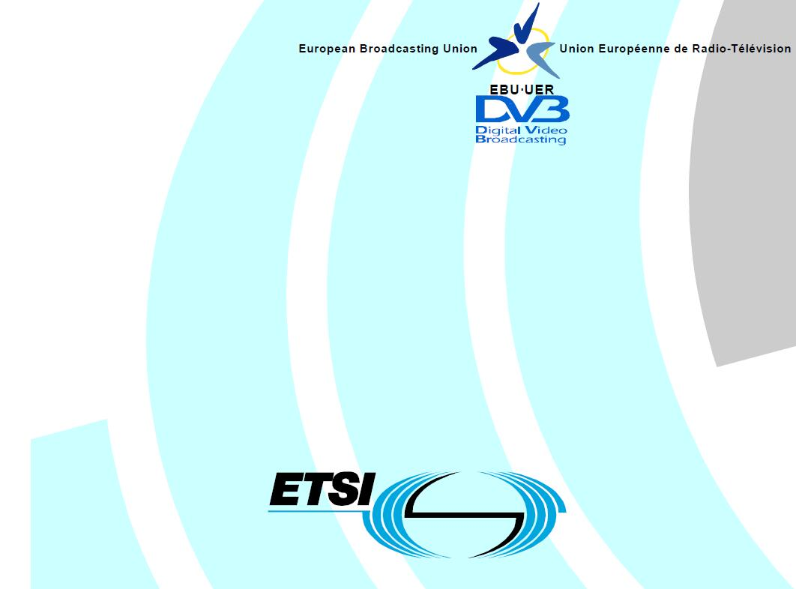

网站 & 作者
OneLib智库 · 分享知识和经验，打造精品智库平台

版权声明：原创文章，未经许可，请勿转载！
©2016 · OneLib智库 · 分享知识和经验，打造精品智库平台
粤ICP备16086248号-1
资料目录
快速索引PSI/SI资料
大家在说
资料来自csdn：KKDestiny的博客
-
"写得非常的简洁，解析的很透彻。"
Captain军弟 2013-10-17 10:05发表 -
"详尽的语言、精练的代码、清晰的表格加上漂亮的排版，让人看了就印象深刻。感谢博主！"
ILOVE_BANHUA2 2013-11-28 13:32发表 -
"讲得很好，初学者直接看书的话往往一头雾水，看这个能迅速形成印象"
ynshome 2014-06-13 12:17发表 -

"以一个行业内的从业人员来看，此篇博文写得非常用心，透彻！感谢分享！"
zhanpeng1984 2015-08-12 10:33发表
资料快查
您可以输入关键词以搜索您要的资料
En300468.V1.7.1_Specification for SI in DVB Systems
European Standard
《En300468.V1.7.1_Specification for SI in DVB Systems》 是European Standard发布的DVB规范，是一份正式的文档，值得仔细学习。
数字视频广播中文业务信息规范
国家广播电影电视总局
《数字视频广播中文业务信息规范》 是国家广播电影电视总局发布的SI规范，也是一份正式的文档，值得仔细学习。
PSI/SI名词速查
林晓州 于 2016年02月17日 发布
如果你对PSI/SI相关的名词缩写还不熟悉，可以参考本文。
TS流的制作、传输及解析
林晓州 于 2016年02月17日 发布
什么是TS？TS是如何制作的？通过什么途径传输？在终端是如何解析的？跟随本文，我们一起来了解这些内容。
描述子Descriptor
林晓州 于 2016年02月26日 发布
本章主要参考了 European Standard提供的英文文档《《En300468.V1.7.1_Specification for SI in DVB Systems》》 和 国家广播电影电视总局提供的中文文档《《数字视频广播中文业务信息规范》》。如有冲突或错误，以英文版规范为准。
PSI/SI的数值分配
林晓州 于 2016年02月27日 发布
为了方便查阅PSI/SI中的表格，特将所有关于值分配的表格整理出来。 有关表格包括PID、stream_type，service_type分配等。
考虑到描述子中有一些表格需要在描述子中进行说明比较合适，一些字段的值编码分配就没有在这里列举了。 如有需要，可直接去描述子那里查看。
PAT表
林晓州 于 2016年02月17日 发布
PAT(Program Association Table,节目关联表) 的意义在于， 它描述了当前TS流中包含了哪些PID；只有根据获得的PID，用户才可以以此作为凭据找出其他表（如PMT表）及其信息。
所以说，PAT是机顶盒接收的入口点，是它获取数据的开始；要保证一个TS流能被正常接收，则至少要有一个完整有效的PAT。
PMT表
林晓州 于 2016年02月17日 发布
PMT(Program Map Table,节目映射表) 的意义在于， 它给出了节目号与组成这个节目元素之间的映射；也就是说，PMT是连接节目号与节目元素的桥梁。
我们知道，一个电视节目至少包含了视频和音频数据，而每一个节目的视音频数据都是以包的形式在TS流中传输的； 所以说，一个TS流包含了多个节目的视频和音频数据包。 要想过滤出一个TS流中其中一个节目的视频和音频，则需要知道这个节目中视频和音频的标识号PID。 PMT表的作用就在于，它提供了每个节目视频、音频（或其他）数据包的PID。
NIT表
林晓州 于 2016年02月17日 发布
NIT(Network Information Table,网络信息表) 描述了数字电视网络中与网络相关的信息，如多少TS流、频点和调制方式等信息。
但这个表本身的信息有限，更多的信息是依靠插入表中的描述符来提供的。 NIT常用的描述符有：网络名称描述符（network_name_descriptor）、有线传送系统（cable_delivery_system_descriptor）、业务列表描述符（service_list_descriptor）和链接描述符（linkage_descriptor）
CAT表
林晓州 于 2016年02月17日 发布
CAT(Conditional Access Table,条件接收表) 条件接收表CAT描述了节目的加密方式，它包含了节目的EMM识别PID。它给出了一个或多个CA系统、EMM流以及与CA相关的特定参数之间的关系。